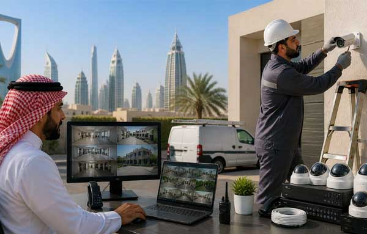

Modern CCTV Surveillance Solution Services Majal IT Networks & Security
In the modern security landscape, a robust CCTV surveillance system is the first line of defense for any commercial, residential, or industrial facility. With advancements in high-definition video imaging, network storage, and artificial intelligence, security cameras have evolved from simple passive recording devices into proactive, intelligent monitoring systems. Majal IT Networks & Security provides professional CCTV surveillance camera systems, equipment supply, certified installation, and maintenance services across Saudi Arabia to protect your assets and ensure peace of mind.
Our CCTV solutions utilize state-of-the-art camera systems including IP cameras, high-speed PTZ (Pan-Tilt-Zoom) cameras, discreet dome cameras, rugged bullet cameras, and specialized thermal cameras. By integrating these high-resolution sensors with centralized Network Video Recorders (NVR) and smart management software, we enable real-time monitoring and high-capacity storage. With our systems, business owners and security personnel can access high-quality live and recorded footage securely from any device, anywhere in the world, over an encrypted cloud connection.
Core Capabilities of Majal CCTV Solutions
We configure CCTV surveillance systems to comply with the local security guidelines of the High Commission for Industrial Security (HCIS) and other regulatory bodies in Saudi Arabia. Key system capabilities include:
-
4K Cameras
-
Video Analytics
-
PTZ Tracking
-
Centralized Storage
-
Remote Monitoring
-
Robust Cabling
Surveillance Analytics Performance
Our systems employ advanced AI analytics to detect anomalies, read license plates, and count visitors. This dramatically reduces false alarms and automates routine monitoring, allowing security officers to respond rapidly only when genuine incidents occur.
Frequently Asked Questions
The High Commission for Industrial Security (HCIS) sets strict regulations for security systems in Saudi Arabia, especially for critical infrastructure, industrial sites, and commercial facilities. Our CCTV designs comply fully with HCIS guidelines regarding camera resolution, frame rates, and retention periods.
Retention periods vary depending on local regulations and client needs. For standard businesses, 31 to 90 days of storage is typical. Critical industrial sectors requiring HCIS approval usually require 90 to 180 days of continuous recording storage.
Yes. All of our installations integrate Uninterruptible Power Supplies (UPS) and Power over Ethernet (PoE) switches with backup battery systems to ensure continuous operation and recording during power interruptions.
AI analytics automate routine surveillance by detecting specific events, such as line crossing, intrusion detection, license plate recognition (LPR), and visitor counting. This reduces false alarms and allows security staff to focus only on genuine incidents.
Absolutely. We configure secure remote access applications allowing authorized administrators to monitor live camera feeds and play back recorded footage from smartphones, tablets, or remote computers securely.